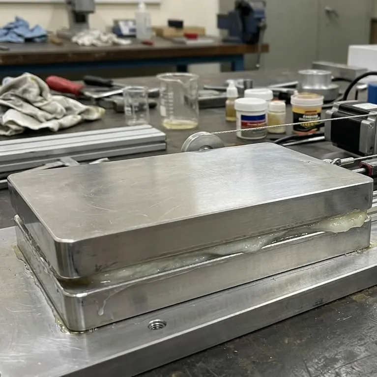
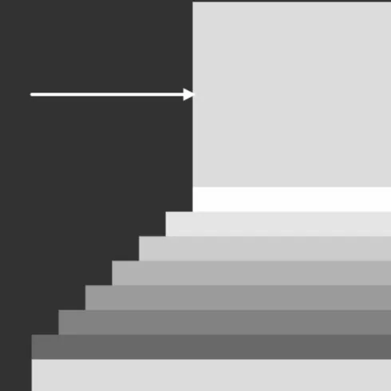
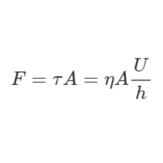

Reality
Idealization
Discretisation

Geometry
AlgebraReality Question
A mechanical engineer is designing a lubricated sliding system where two plates move past each other with a thin fluid layer in between.
For a given lubricant and gap, how much force is required to maintain a steady sliding speed?
A mathematical model helps answer this.